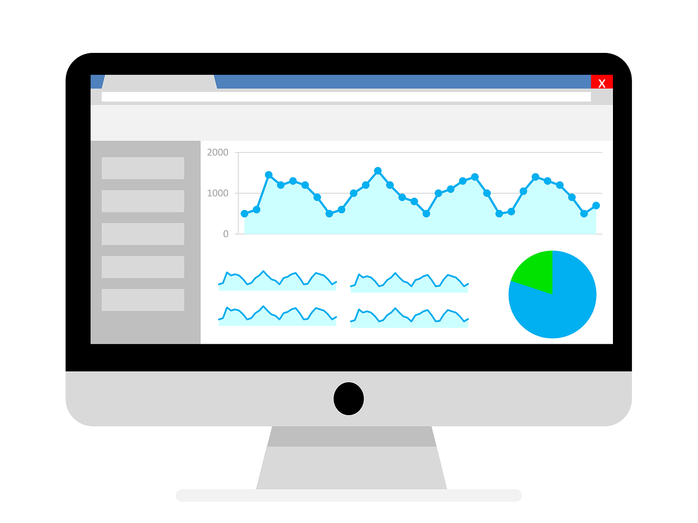

Data drives business transformation. Our solutions offer insights that empower you to create new products, improve customer experience, and enhance business outcomes
.
of senior executives are excited or optimistic about data analytics’ potential impact.
of senior executives believe AI’s business impact will be significant or greater.
The majority of companies are at various stages of data and analytics implementation, from planning to completion.
A majority of senior executives are seeking better KPIs to measure data and analytics success.
Understanding Your Business Goals
Start with understanding business goals, challenges, & opportunities, ensuring our data & analytics solutions align perfectly with your strategic objectives.
Data Assessment and Strategy Development
We assess your data landscape thoroughly, evaluating quality, sources, and infrastructure. This informs a precise data strategy with clear objectives, governance frameworks, and technology recommendations.
Implementation of Advanced Analytics Solutions
With our strategic approach, we implement advanced analytics solutions using cutting-edge technologies like machine learning and predictive analytics to unlock actionable insights for informed decision-making.
Continuous Optimization and Insights Generation
We're committed to excellence beyond implementation. We continuously optimize your data solutions to align with your evolving needs, generating insights that drive efficiency, innovation, and growth.
Collaboration and Knowledge Transfer
We emphasize collaboration and knowledge transfer, fostering a data-driven culture. Our training and support empower your teams for sustained business success.
Measuring Success with KPIs
Scalability and Future Readiness